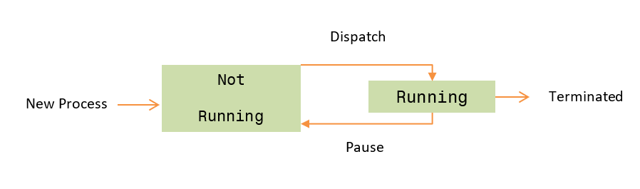

Process Control Block
Tracks job id, burst time, state, and privilege mode so each job can move through the 7-state model.
NEWREADYRUNNINGTERMINATED
Eco-Cloud OS Kernel

Each card is tied to the implementation you have in the kernel output.
Tracks job id, burst time, state, and privilege mode so each job can move through the 7-state model.
Time quantum is adaptive and chosen from the 80th percentile of the current burst times.
The scheduler derives the quantum from the workload rather than a fixed constant.
Q = P80(burst_times) | i = ceil((x / 100) * N) - 1 (0-based)
Each dispatch pays a real context switch overhead before the process runs.
Banker's Algorithm checks every energy request and only grants it if the system stays safe.
User jobs switch to kernel mode to request shared energy resources.
Concurrency primitives protect the ready queue and shared energy budget.
The job generator fills the ready queue while CPU cores consume from it.
Use the filter or stepper to walk through the actual output from a kernel run.
Select an event to see the explanation.
The final safe state from the same run. This mirrors the kernel printout.
| Process | Allocated | Need |
|---|
Interactive simulators for partition allocation, fragmentation, and paging.
Jobs are loaded into the first (or best) fitting free partition. Internal fragmentation is the wasted space inside an oversized partition.
Total free memory may be sufficient, but scattered across non-contiguous holes — making a large contiguous request impossible without compaction.